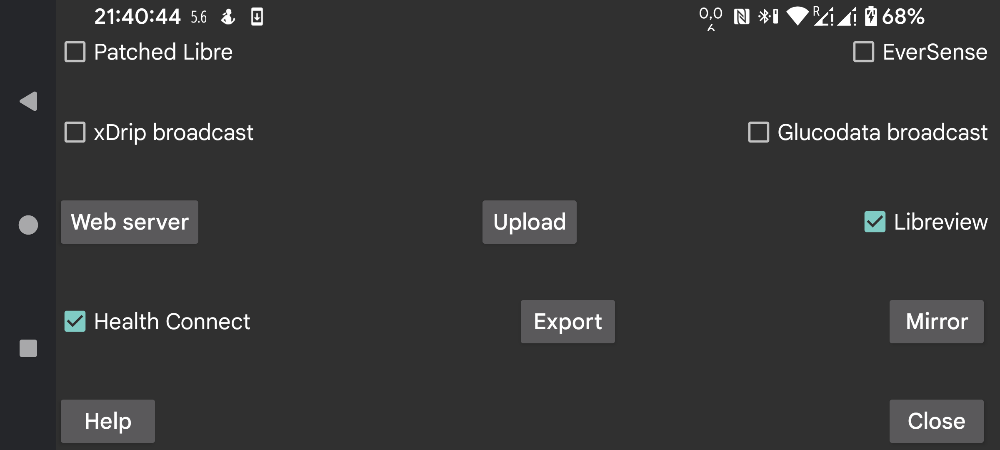

Send minutely glucose values to Health Connect. You can give other app access to these glucose values, for example Google Fit. Other apps again can get assess to data from Google Fit.
Connect with Libreview to send Freestyle Libre 2 and 3 glucose values and amounts to Libreview and to get the account id used during Freestyle Libre 3 sensor activation. Touch to change settings.
The Patched Libre broadcast was in the past used to send the glucose values to xDrip.
Yet another glucose broadcast. It can be used to send every minute a glucose value to xDrip. In xDrip you need to set “460G/EverSense” as the Hardware Data Source.
xDrip will ignore nearly all of them because of its insistence on one value in 5 minutes. You can remove this restriction by editing the source code of xDrip. Change 4 * 60 * 1000 to 55 * 1000 in app/src/main/java/com/eveningoutpost/dexdrip/models/BgReading.java, so that it becomes:
public static BgReading readingNearTimeStamp(long startTime)
{
long
margin = (55 * 1000);
return
readingNearTimeStamp(startTime, margin);
}
The advantage over the Patched Libre broadcast is, that xDrip doesn’t transform the glucose values in some unspecified manner.
Send the same broadcast as turned on in xDrip with "Settings->Inter-app settings->Broadcast locally". Apps like AndroidAPS listen to it. Unlike the original xDrip broadcast which was broadcast every 5 minutes, Juggluco broadcasts this broadcast every minute.
A new broadcast that has the same function as the xDrip broadcast. A simple example app that writes received glucose values to logcat you can find here: Glucose broadcasts. If you specify Juggluco as data-source in G-Watch, you need to turn on this broadcast.
The application apps listening to this broadcast are shown. Check the apps you want to send this broadcast to.
Web server that can be used with xDrip watches and some Nightscout apps. Previously called xDrip webserver.
Upload to a Nightscout server.
Send all data via an internet connection to another instance of Juggluco thereby creating a clone of Juggluco on another device. Existing data will be overwritten.
Save data to a file.